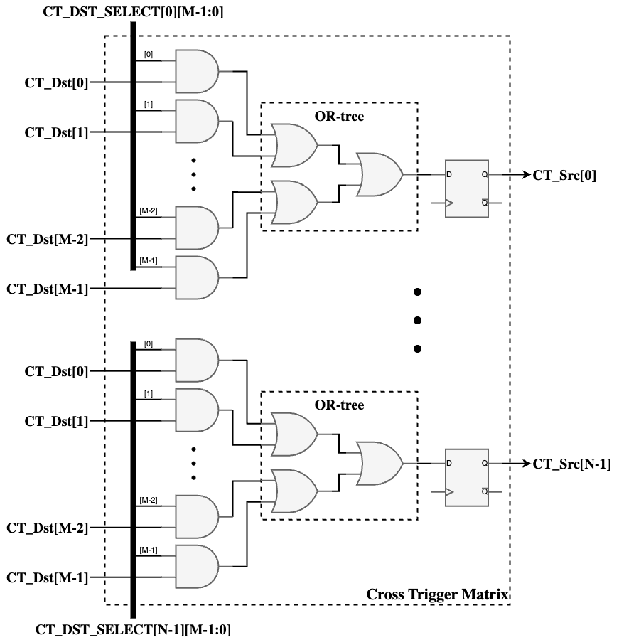

AoU Overview and Features
Apache License Release
AOU_CORE Microarchitecture specification
Version 1.00, Feb.27 2026
BOS Semiconductors
Introduction
This microarchitecture specification includes detailed functional description of AOU_CORE.
The contents of this document are given as follows. Section 1 is for overview. Section 2 is for features, implementation specific features, and assumptions. In Section 3, the architecture and operation of AoU IP are given. Section 4 covers interrupt sources. Section 5 covers error handling. Section 6 includes the integration guidelines such as clocks, resets, and I/O descriptions. Section 7 includes the software operation guide including the register map and activation flows. Section 8 includes performance, power, and area information.
Overview
The AOU_CORE is a bridge between AXI interface and the UCIe FDI interface, defined in AoU standard v0.7 spec. To achieve low latency, AOU_CORE directly handles signals related to the UCIe FDI interface data flow control and processes data in 32-byte, 64-byte, or 128-byte chunks (selected at integration time via the FDI_CONFIG parameter; see the Integrator guide) in a cut-through manner, without converting them to 256-byte flit data. It receives AXI messages from its own AXI subordinate interface, packs them into chunks of the configured FDI width, and transmits these chunks to the remote AoU device via UCIe. The remote AoU receives the chunks from the UCIe FDI interface, unpacks them into AXI messages, and delivers the data through its AXI manager interface. The one-way AoU latency, measured from the AXI input of the local device to the AXI output of the remote device over a back-to-back connection in a single clock domain, is 7 cycles for read requests, 8 cycles for read data, 9 cycles for write requests, 9 cycles for write data, and 6 cycles for write responses. For applications using UCIe, including those with some CDC domains, the round-trip time (RTT) latency from an AXI read request to the corresponding AXI read response through this AoU IP over UCIe is approximately 45 cycles, excluding the memory latency of the remote device.
To achieve high efficiency, all TX requests and data messages are packed in a compact format, ensuring that no AoU payload slots are wasted. The current payload is even updated when the UCIe stalls the current chunk and space remains available. As a result, the throughput matches the values defined in the AoU specification. In each cycle, the RX can process the maximum number of messages defined in the AoU standard: 4 read requests, 4 write requests, 2 read data, 2 write data, and 12 write responses, respectively.
It supports flow control for all exceptional cases defined in the UCIe standard. First, it handles the chunk valid/cancel signal, including the alternative implementation method described in the UCIe specification. Second, it handles the stall request signal received from the D2D Adapter while maintaining the Flit-aligned boundary. Interoperability is also supported when the remote device uses a different AXI data width.
AOU_CORE supports a configurable number of Resource Plane(RPs), with both the number of RPs and each RP's AXI data width fully parameterizable. A dedicated field in the SFR allows software to configure the target RP, enabling flexible RP mapping. For each RP, the AW, W and AR channel support three arbitration modes: Round Robin, AXI QoS scheme, and Port QoS scheme. Additionally, a starvation-prevention mechanism is implemented to ensure fair arbitration across all RP channels.
The operating frequency of AOU_CORE targets 1 GHz and meets timing requirements without relying on multi-cycle paths. The TX buffer is configured with a minimal number of FIFO entries, while the RX Data buffer default depth is FDI-config aware: default 140 entries when FDI_CONFIG selects a 1024b (128B) FDI interface (FDI_CFG_SP_128B or FDI_CFG_TP_64B_128B), and default 88 entries otherwise. The entry size takes into account the round-trip latency for credit consumption and return, and matches the per-RP RP*_RX_W_FIFO_DEPTH / RP*_RX_R_FIFO_DEPTH parameter defaults documented in the Integrator guide.
Features
Figure 1 shows the AXI-to-UCIe bridge functions and their relationships.

Figures and tables: Figure 1.
Basic features
-
Single APB subordinate interface
-
Configuration/control/status register access
-
-
Multiple AXI subordinate & manager interface
-
Configurable RP port & RP remapping supported
-
Supports variable data widths and burst length requests. Configurable FIFO Depth
-
-
UCIe 256B latency-optimized flit(Format 6) support only
-
Message packing and unpacking are handled in a unit of 32, 64, or 128 bytes, corresponding to the configured FDI data width (32B@1 GHz, 64B@1 GHz, or 128B@1 GHz).
-
Selectable Early response by setting SFR
-
Selectable 32B / 64B / 128B single-PHY and 32B+64B / 64B+128B two-PHY FDI configurations, selected via the FDI_CONFIG parameter (see the Integrator guide). Two-PHY variants additionally require the +define+TWO_PHY build flag so the second-PHY ports physically exist.
-
Configurable number of Resource Plane and each RP's AXI data width
-
RP Remapping
-
QoS scheme between RP with AW, W, AR channel
-
Interoperability with different data width remote die
-
Handling of flit cancel and stall request as specified in the UCIe specification
-
Selectable AXI Aggregator added for BUS efficiency
-
According to the AoU specification, except for the AXI data width, the parameters AXI_ADDR_WD, AXI_ID_WD, and AXI_LEN_WD are fixed. Porting to match the width of the connected ports must be handled externally to AOU_CORE_TOP.
-
Returning read data that exceeds the AXI data width of the remote die is treated as a violation.
-
For a Read Request received from the remote die, if ARSIZE is 5 or less, it returns a Read Data message with DLEN = 2'b00; if ARSIZE is 6, it returns a Read Data message with DLEN = 2'b01; if ARSIZE is 7, it returns a Read Data message with DLEN = 2'b10; Accordingly, if the local die receives a read data message from the remote die whose size is smaller than its own AXI data width, it duplicates the data to match its own AXI data width.